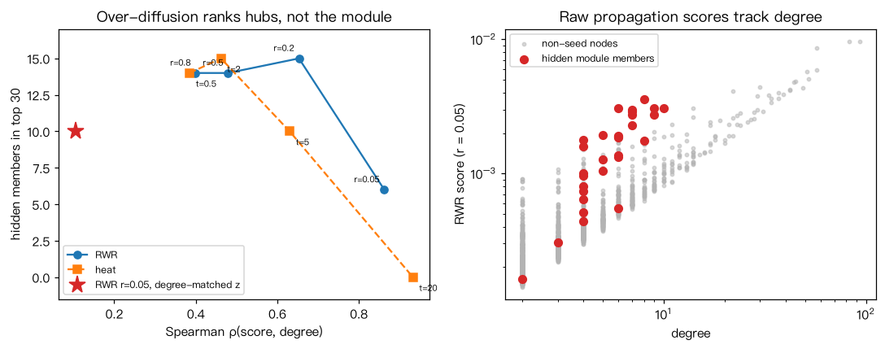

Example05 / 07
网络传播——带重启随机游走（RWR）与热扩散的参数、度偏倚与去偏
用同一个埋入模块的合成网络：30 个已知疾病基因作种子，按传播分数给其余节点排序， 看前 30 名中有多少隐藏的模块成员（召回）。比较 RWR 的重启概率 r 与热扩散的时间 t， 并计算分数与节点度的 Spearman 相关：r 越小 / t 越大，传播越“全局”，分数越接近度（平稳分布）。 最后用 200 组度匹配随机种子把 RWR 分数转成 z 分数，演示“去度偏倚”。 输出解读：中等参数时召回最好；过度扩散后排名被枢纽占据；z 分数排序降低了与度的相关。
Output输出图

Output文字输出
RWR： r = 0.05：前30名中隐藏成员 6 个；分数与度的 Spearman ρ = 0.86 r = 0.20：前30名中隐藏成员 15 个；分数与度的 Spearman ρ = 0.65 r = 0.50：前30名中隐藏成员 14 个；分数与度的 Spearman ρ = 0.48 r = 0.80：前30名中隐藏成员 14 个；分数与度的 Spearman ρ = 0.40 热扩散： t = 0.5：前30名中隐藏成员 14 个；分数与度的 Spearman ρ = 0.38 t = 2.0：前30名中隐藏成员 15 个；分数与度的 Spearman ρ = 0.46 t = 5.0：前30名中隐藏成员 10 个；分数与度的 Spearman ρ = 0.63 t = 20.0：前30名中隐藏成员 0 个；分数与度的 Spearman ρ = 0.93 r = 0.05：原始分数 前30命中 6，ρ(度) = 0.86；度匹配 z 分数 前30命中 10，ρ(度) = 0.10
Code代码
# 用同一个埋入模块的合成网络：30 个已知疾病基因作种子，按传播分数给其余节点排序，
# 看前 30 名中有多少隐藏的模块成员（召回）。比较 RWR 的重启概率 r 与热扩散的时间 t，
# 并计算分数与节点度的 Spearman 相关：r 越小 / t 越大，传播越“全局”，分数越接近度（平稳分布）。
# 最后用 200 组度匹配随机种子把 RWR 分数转成 z 分数，演示“去度偏倚”。
# 输出解读：中等参数时召回最好；过度扩散后排名被枢纽占据；z 分数排序降低了与度的相关。
import networkx as nx
import numpy as np
import scipy.sparse as sp
from scipy.sparse.linalg import expm_multiply, spsolve
from scipy.stats import spearmanr
def planted_module_network(n=2000, m=2, size=60, seed=7):
rng = np.random.default_rng(seed)
G = nx.barabasi_albert_graph(n, m, seed=seed)
module = rng.choice([v for v in G if G.degree(v) <= 6], size=size, replace=False).tolist()
for _ in range(90):
u, v = rng.choice(module, size=2, replace=False)
G.add_edge(int(u), int(v))
known = sorted(rng.choice(module, size=size // 2, replace=False).tolist())
return G, known, sorted(set(module) - set(known))
G, known, hidden = planted_module_network()
N = G.number_of_nodes()
A = nx.to_scipy_sparse_array(G, nodelist=range(N), format="csc", dtype=float)
deg = np.asarray(A.sum(axis=0)).ravel()
W = A @ sp.diags(1.0 / deg) # 列随机矩阵 W = A D^{-1}
I = sp.identity(N, format="csc")
L_rw = I - W # 随机游走拉普拉斯（作用在概率分布上）
def p0_of(seeds):
p = np.zeros(N); p[list(seeds)] = 1.0 / len(seeds); return p
def rwr(seeds, r):
# 闭式解 p* = r (I - (1-r) W)^{-1} p0；稀疏线性方程组求解
return spsolve((I - (1 - r) * W).tocsc(), r * p0_of(seeds))
def heat(seeds, t):
# 热扩散 p(t) = exp(-t L_rw) p0，总量守恒
return expm_multiply(-t * L_rw, p0_of(seeds))
def evaluate(score, seeds, top=30):
rest = np.array(sorted(set(range(N)) - set(seeds)))
order = rest[np.argsort(-score[rest], kind="stable")]
hits = len(set(order[:top].tolist()) & set(hidden))
rho = spearmanr(score[rest], deg[rest]).statistic
return hits, rho
sweep = {"RWR": [], "heat": []}
print("RWR：")
for r in [0.05, 0.2, 0.5, 0.8]:
h, rho = evaluate(rwr(known, r), known)
print(f" r = {r:4.2f}：前30名中隐藏成员 {h:2d} 个；分数与度的 Spearman ρ = {rho:.2f}")
sweep["RWR"].append((f"r={r}", h, rho))
print("热扩散：")
for t in [0.5, 2, 5, 20]:
h, rho = evaluate(heat(known, t), known)
print(f" t = {t:4.1f}：前30名中隐藏成员 {h:2d} 个；分数与度的 Spearman ρ = {rho:.2f}")
sweep["heat"].append((f"t={t}", h, rho))
# 去度偏倚：r 较小时，用度匹配随机种子集构造每个节点的零分布
r = 0.05
by_deg = {}
for v in range(N):
by_deg.setdefault(int(deg[v]), []).append(v)
bins, cur = [], []
for d in sorted(by_deg):
cur += by_deg[d]
if len(cur) >= 50: bins.append(cur); cur = []
if cur: bins[-1] += cur
node2bin = {v: b for b in bins for v in b}
rng = np.random.default_rng(0)
obs = rwr(known, r)
null = np.array([rwr([int(rng.choice(node2bin[s])) for s in known], r) for _ in range(200)])
z = (obs - null.mean(0)) / (null.std(0) + 1e-12)
h_raw, rho_raw = evaluate(obs, known)
h_z, rho_z = evaluate(z, known)
print(f"r = {r}：原始分数 前30命中 {h_raw}，ρ(度) = {rho_raw:.2f}；度匹配 z 分数 前30命中 {h_z}，ρ(度) = {rho_z:.2f}")
import matplotlib.pyplot as plt
fig, ax = plt.subplots(1, 2, figsize=(10, 4))
for (name, rows), st, off, ha in zip(sweep.items(), ["o-", "s--"], [(-4, 6), (5, -11)], ["right", "left"]):
ax[0].plot([x[2] for x in rows], [x[1] for x in rows], st, label=name)
for lab, h, rho in rows:
ax[0].annotate(lab, (rho, h), textcoords="offset points", xytext=off, ha=ha, fontsize=7)
ax[0].plot(rho_z, h_z, "*", ms=14, color="C3", label=f"RWR r={r}, degree-matched z")
ax[0].set_xlabel("Spearman ρ(score, degree)"); ax[0].set_ylabel("hidden members in top 30"); ax[0].set_ylim(-1.5, 17)
ax[0].set_title("Over-diffusion ranks hubs, not the module"); ax[0].legend(fontsize=8)
rest = np.array(sorted(set(range(N)) - set(known))); hid = np.isin(rest, hidden)
ax[1].scatter(deg[rest], obs[rest], s=8, color="0.7", alpha=0.5, label="non-seed nodes")
ax[1].scatter(deg[rest][hid], obs[rest][hid], s=40, color="C3", label="hidden module members")
ax[1].set_xscale("log"); ax[1].set_yscale("log")
ax[1].set_xlabel("degree"); ax[1].set_ylabel(f"RWR score (r = {r})")
ax[1].set_title("Raw propagation scores track degree"); ax[1].legend(fontsize=8)
plt.tight_layout(); plt.show()Run在浏览器中运行
首次加载 Python 环境约需 20–40 秒；可以修改参数后重新运行。